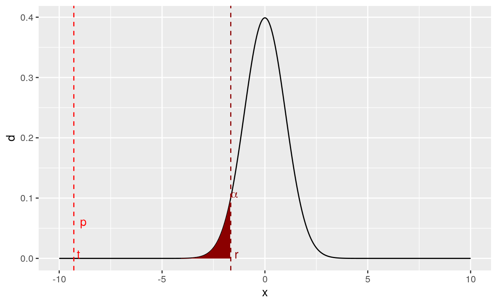
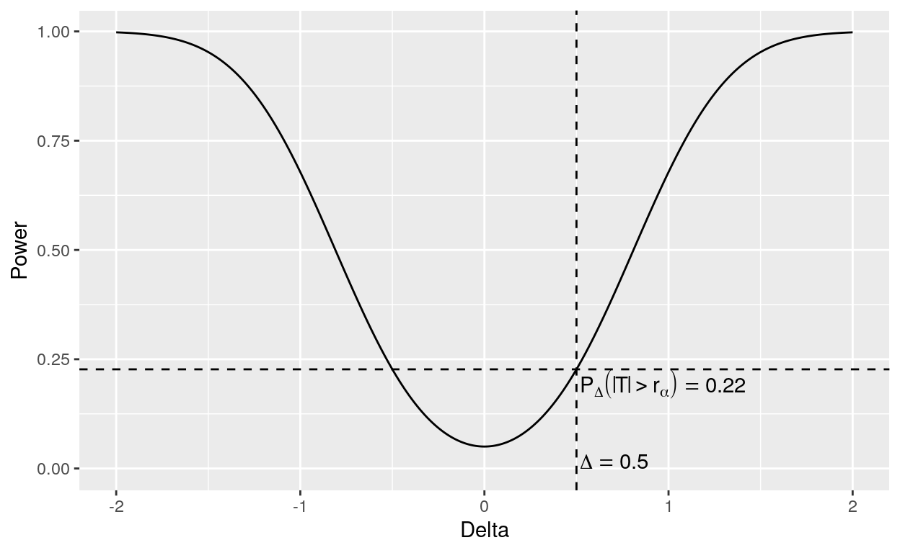
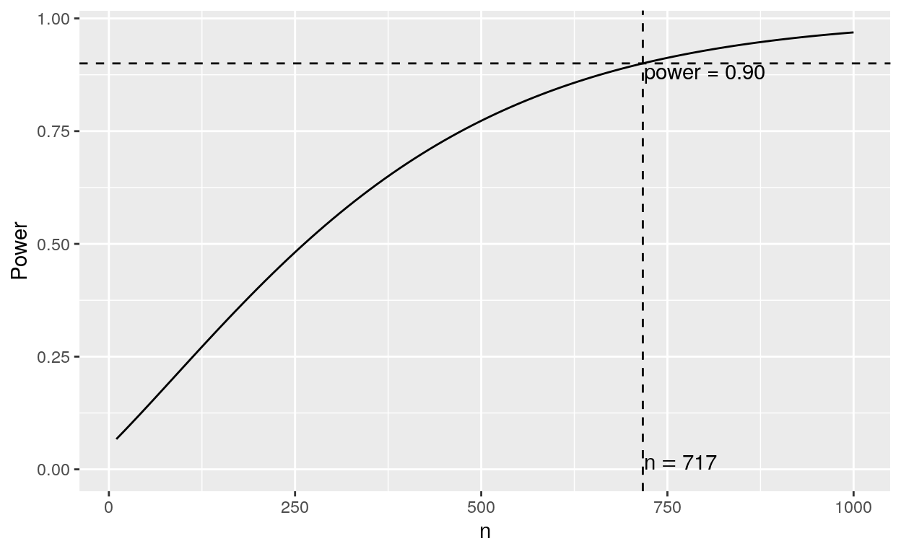
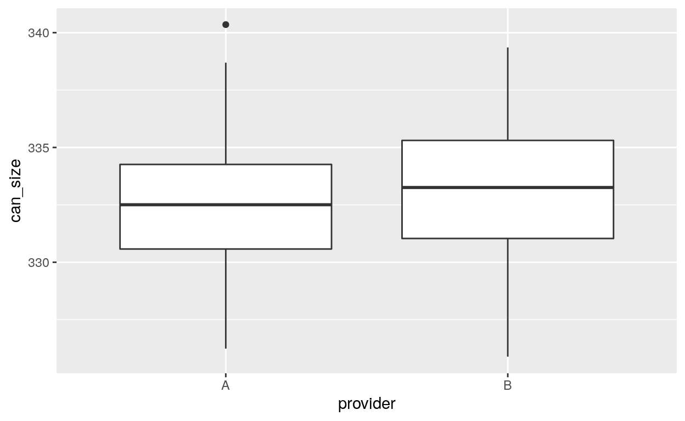

In this case study, you are a buyer of soda cans and think a seller is cheating you by selling you smaller than advertised. The advertised capacity is 333 mL but you regularly end up needing quite more than 3 cans to fill up 1L bottles and you’re starting to get suspicious.
You want to take the matter into your hands and contact a local measurement laboratory to make independent enquiries. Depending on the results you’ll have to change providers.
You send the lab a pack of 100 randomly sampled cans and it sends you back the 1000 measurements, stored in the object can_sizes). Each element of can_sizes is the capacity of one can.
Note \(\mu\) the actual can capacity of your provider and \(X_i\) the capacity of can \(i\) (measured to be \(x_i\)).
Assume the \(X_i\) are independent variables and that they all follow a gaussian distribution \(\mathcal{N}(\mu, \sigma^2)\) with both \(\mu\) and \(\sigma^2\) unknown.
Given the context, you need to choose a null (\(H_0\)) and an alternative (\(H_1\)) hypothesis. Your null is obviously: \(H_0: \mu = 333\) but you need to think about the alternative.
Remark: In the previous segment, you decided to test \(H_0: \mu = 333\) against \(H_1: \mu < 333\). You could have decided to test \(H_0: \mu \geq 333\) against \(H_1: \mu < 333\). Both choices leads to the same estimator and the same decision rule. \(\mu = 333\) constitutes a worst case scenario of \(\mu \geq 333\). Intuitively, it minimizes the difference between \(H_0\) and \(H_1\).
You need an estimator of \(\mu\) to pursue. Since your statistical model is very simple, you’re going to use the usual estimator \(\bar{X}\).
You know that the \(\bar{X} \sim \mathcal{N}(\mu, \sigma^2 / n)\) but you don’t know \(\sigma^2\) so you can’t build the decision rule directly from \(\bar{X}\).
You first need to build a statistic whose distribution is known, at least under \(H_0\) (i.e. when \(\mu = 333\)). You can replace \(\sigma^2\) with \(S^2 = \frac{1}{n-1}\sum_{i=1}^n (X_i - \bar{X})^2\) and use instead \(T = \frac{\bar{X} - 333}{S/\sqrt{n}}\)
Compute the estimation \(\hat{\mu}\) of \(\mu\).
mu_hat <- mean(can_sizes)What’s the observed value of \(T\)
mu_hat <- mean(can_sizes)
sigma_hat <- sd(can_sizes)
n <- length(can_sizes)
t <- (mu_hat - 333)/(sigma_hat / sqrt(n))Under \(H_0\), the distribution of \(T\) is centered around \(0\) whereas under \(H_1\), it’s centered around \(\sqrt{n}(\mu - 333)/\sigma < 0\). Under \(H_1\), \(T\) is likely to be smaller that \(0\).
Your reject rejection region should thus take the form \(\mathcal{R} = (-\infty, r)\) with a well chosen value of \(r\).
Using the function qt() (quantile of the t-distributions), find \(r\) such that \(P_{H_0}(T \leq r) = \alpha\) (with \(\alpha = 0.05\))
qt(p = 0.05, df = 99)The previous results allowed you to reject \(H_0\) at level \(\alpha = 0.05\). \(\alpha\) controls the frequency of type I errors (where the can sizes really have a mean of 333 but your sample is quite atypical and makes you conclude otherwise)
Type I errors
But what about other values of \(\alpha\)?
Compute rejection threshold for \(\alpha = 10^{-2}\), \(\alpha = 10^{-10}\) and \(\alpha = 10^{-18}\)
qt(p = c(1e-2, 1e-10, 1e-18), df = 99)Repeating the process of computing \(r\) for various values of \(\alpha\) and comparing it to \(t\) is tedious. You can avoid it by computing \[ p = P_{H_0}(T \leq t) \] Or graphically (\(p\) is very small here, you can’t really see the corresponding area).

By definition of \(p\), as soon as \(\alpha > p\), you can reject \(H_0\) at level \(\alpha\). This is the so-called \(p\)-value. Intuitively, the lower the p-value, the better your evidence against \(H_0\).
Compute the p-value of your test:"Use pt() with the right value for the degree of freedom"t <- -9.29062
pt(t, df = 99)Typing all of the above to compute \(\hat{\mu}\), \(\hat{\sigma}\), \(t\) and \(p\) is not very convenient. Fortunately, R provides the t.test() function to spare you some typing:
t.test(x = can_sizes, mu = 333, alternative = "less")##
## One Sample t-test
##
## data: can_sizes
## t = -9.2906, df = 99, p-value = 1.929e-15
## alternative hypothesis: true mean is less than 333
## 95 percent confidence interval:
## -Inf 330.6163
## sample estimates:
## mean of x
## 330.0975where you specified that you’re doing a one sample t-test and are testing \(H_0 : \mu = 333\) (mu argument) against \(H_0 : \mu < 333\) (alternative argument).
See how the output provides you with a nice summary of the test statitic (t), the degree of freedom (df), the p-value (p-value) that you computed manually. It also gives you \(\hat{\mu}\).
Bonus You can use t.test() to quickly build a confidence interval of \(\hat{\mu}\) at any level
t.test(x = can_sizes, conf.level = 0.99)##
## One Sample t-test
##
## data: can_sizes
## t = 1056.6, df = 99, p-value < 2.2e-16
## alternative hypothesis: true mean is not equal to 0
## 99 percent confidence interval:
## 329.2770 330.9181
## sample estimates:
## mean of x
## 330.0975The p-value is not really interesting here (we just tested \(H_0: \mu = 0\) against \(H_0: \mu \neq 0\) which is stupid in that context) but we 99% percent confidence interval is [329.2770, 330.9181].
Based on your previous investigations, you decide to change providers for a more honest one. You contact providers A and B, both of which send you a sample of 100 cans (can_sizes_A and can_sizes_A) for you to test.
Test whether A and B really sell 333mL cans:
"Reproduce the code used for the original provider""Use the `t.test()` function()"t.test(can_sizes_A, mu = 333, alternative = "less")
t.test(can_sizes_B, mu = 333, alternative = "less")Your first tests suggest that providers A and B are not selling grossly undersized cans but before picking one of them, you want to check if there are differences between the cans they sell. This is a test of equality of the means.
Formally note:
And assume that the \((X_i^A)_{i=1\dots n_A}\) (resp. \((X_i^A)_{i=1\dots n_A}\)) are i.i.d \(\mathcal{N}(\mu_A, \sigma^2_A)\) (resp. \(\mathcal{N}(\mu_B, \sigma^2_B)\)). For simplicity, you can assume \(\sigma_A = \sigma_B = \sigma\) (equal but unknown variances) and \(n_A = n_B = n\) (equal sample sizes).
You want to test \(H_0: \mu_A = \mu_B\) against \(H_1: \mu_A \neq \mu_B\). You can do that using t.test() with the following syntax (fill in the blanks):
t.test(
x = , ## can sizes from provider A
y = , ## can sizes from provider B
alternative = , ## what should you put here?
var.equal = TRUE ## keep that value unchanged
)t.test(
x = can_sizes_A,
y = can_sizes_B,
alternative = "two.sided",
var.equal = TRUE
)In many real life context, your data will not be stored in two vectors can_sizes_A and can_sizes_B but rather in a tibble object:
data_size## # A tibble: 200 x 2
## provider can_size
## <chr> <dbl>
## 1 A 332.
## 2 A 328.
## 3 A 331.
## 4 A 334.
## 5 A 330.
## 6 A 332.
## 7 A 334.
## 8 A 332.
## 9 A 330.
## 10 A 327.
## # … with 190 more rowsThere’s no need to build two different vectors, you can use t.test() with the so called formula interface as follows
t.test(can_size ~ provider, data = data_size,
var.equal = TRUE, alternative = "two.sided")##
## Two Sample t-test
##
## data: can_size by provider
## t = -1.4449, df = 198, p-value = 0.1501
## alternative hypothesis: true difference in means is not equal to 0
## 95 percent confidence interval:
## -1.4071827 0.2170804
## sample estimates:
## mean in group A mean in group B
## 332.6869 333.2820Note that the results are exactly the same as before.
Your estimates are \(\hat{\mu}_A = 332.6869\) and \(\hat{\mu}_B = 333.2820\). The difference was not significant but it might be because you are underpowered (i.e. the difference between \(\mu_A\) and \(\mu_B\) is real but small and you don’t have enough samples to find it).
In that case, your conclusion is a Type II error (we’re concluding that there’s no difference when there really is one).
Type II errors
Let’s say you want to find differences as small as 0.5 mL with high probability (say 0.9). You probably need more than 100 samples. Finding the exact value \(n = n_A = n_B\) is called a power study. This is the goal of this section.
But first a bit of theory. The test statistic we just used is
\[ T = \sqrt{n}\frac{\bar{X}_A - \bar{X}_B}{\sqrt{S_A^2 + S_B^2}} \] With the usual estimators of \(\mu_A\), \(\mu_B\), \(\sigma_A^2\) and \(\sigma_B^2\). The statistics is a bit complex but you only need to know that under \(H_0\), \(T \sim \mathcal{T}(2n-2)\)
Since you’re doing a two-sided test, the rejection rule is \(\mathcal{R} : |T| \geq r_\alpha\) where \(r_\alpha\) is chosen such that \[
P_{H_0}(|T| > r_\alpha) = P_{H_0}(T < - r_\alpha) + P_{H_0}(T > r_\alpha) = \alpha
\] and can be computed as qt(1 - alpha/2, df = 2*n -2). In our example:
alpha <- 0.05
n <- 100
qt(1 - alpha/2, df = 2*n -2)## [1] 1.972017What happens if \(\Delta = \mu_A - \mu_B \neq 0\)?
Your test statistic \(T\) does not follow a \(\mathcal{T}(2n-2)\) distribution anymore.
A close look shows that \[ \sqrt{n}\frac{(\bar{X}_A - \bar{X}_B) - \Delta}{\sqrt{S_A^2 + S_B^2}} = T - \frac{\sqrt{n}\Delta}{\sqrt{S_A^2 + S_B^2}} \sim \mathcal{T}(2n -2) \] Note that under \(H_0\), \(\Delta = 0\) so that \(\frac{\sqrt{n}\Delta}{\sqrt{S_A^2 + S_B^2}} = 0\) and the above equality simplifies to \(T \mathcal{T}(2n-2)\) under \(H_0\). For simplicity, we’re going to assume that \(n\) is large enough to approximate \(\sqrt{S_A^2 + S_B^2} = 2\sigma^2\).
The probability to reject \(H_0\) (and thus detect differences) is given by the same decision rule \(\mathcal{R}\) but the distribution of \(T\) has changed from \(P_{H_0} = P_{0}\) (i.e. where the subscript indicates the value of \(\Delta\)) to \(P_{H_1} = P_{\Delta}\). It is thus given by \[ \begin{align} P_{\Delta}(|T| > r_\alpha) & = P_{\Delta}(T < - r_\alpha) + P_{\Delta}(T > r_\alpha) \\ & = P\left(\mathcal{T}(2n -2) + \frac{\sqrt{n}\Delta}{\sqrt{2}\sigma} < -r_\alpha\right) + P\left(\mathcal{T}(2n -2) + \frac{\sqrt{n}\Delta}{\sqrt{2}\sigma} > r_\alpha\right) \\ & = P\left(\mathcal{T}(2n -2) < -r_\alpha - \frac{\sqrt{n}\Delta}{\sqrt{2}\sigma} \right) + P\left(\mathcal{T}(2n -2) > r_\alpha - \frac{\sqrt{n}\Delta}{\sqrt{2}\sigma} \right) \end{align} \]
In our example, \(\sqrt{2}\sigma \simeq \sqrt{S_A^2 + S_B^2} = 4.11\), \(\alpha = 0.05\), \(n=100\) and \(r_\alpha = 1.97\). Let’s compute \(P_{\Delta}(|T| > r_\alpha)\) for \(\Delta = 0.5\).
c <- sqrt(100) * 0.5 / 4.11 ## 1.21
pt(-1.97 - c, df = 198) + (1 - pt(1.97 - c, df = 198))## [1] 0.2268724We only have a 22.6% chance of detecting a difference of 0.5mL between the provider!!
Let take look at the detection power \(P_{\Delta}(|T| > r_\alpha)\) as a fonction of \(\Delta\).

As expected, the bigger the difference \(|\Delta|\), the higher the detection power. For a given value of \(\Delta\) (here 0.5), we can look at the detection power \(P_{\Delta}(|T| > r_\alpha)\) as a fonction of \(n\).

The graph reveals that you would need quite large sample sizes (> 700) to reliably detect differences of magnitude \(0.5\)mL. You decide not to do it.
If you’re not sure that the variances are equal in the two populations, you can set remove var.equal = TRUE or set var.equal = FALSE (the default) in t.test(). In general, it’s good practice to check that the variances are equal between the two groups either by visual inspection:
ggplot(data_size, aes(x = provider, y = can_size)) + geom_boxplot()
Or with a test of equality of variances (var.test())
var.test(can_size ~ provider, data = data_size)##
## F test to compare two variances
##
## data: can_size by provider
## F = 1.0626, num df = 99, denom df = 99, p-value = 0.7632
## alternative hypothesis: true ratio of variances is not equal to 1
## 95 percent confidence interval:
## 0.7149584 1.5792650
## sample estimates:
## ratio of variances
## 1.062595Both checks confirm that we can reasonably assume \(\sigma_A^2 = \sigma_B^2\).
prop.test() I)Based on the previous results, you can’t really decide between producers \(A\) and \(B\) and end up picking \(A\) based on price.
After a few months you decide to evaluate the quality of the provider by looking at the sugar concentration in the soda. Provider \(A\) advertises “> 80% of our cans contain at least 13.2 g / 100 mL of sugar”. You measure sugar concentration (in g / 100 mL) in a sample of 100 cans and end up with 100 concentrations stored in sugar_con.
Formally, note \(X_i\) the sugar concentration of can \(i\) coded as \(1\) (or TRUE) if the concentration is higher than 13.2 and \(0\) (or FALSE) otherwise.
Assume that the \((X_i)\) are \(i.i.d.\) with distribution with \(X_i \sim \mathcal{B}(p)\).
Build a boolean vector conform to identify the cans with concentrations higher than 13.2.
conform <- "Use `>=`"conform <- sugar_con >= 13.2Use table() to count the number of TRUE in conform
conform <- sugar_con >= 13.2
table(conform)Equipped with this knowledge, you can test \(H_0: p = 0.8\) against \(H_0: p < 0.8\) using prop.test() using the following syntax (fill in the blanks):
prop.test(
x = , ## Number of successes, here valid cans
n = , ## Number of trials, here measured cans
p = , ## value of p under H_0
alternative = ## What should you put here?
)prop.test(
x = 77, ## Number of successes, here valid cans
n = 100, ## Number of trials, here measured cans
p = 0.8, ## value of p under H_0
alternative = "less" ## What should you put here?
)Bonus Just like t.test(), you can use prop.test() to compute confidence intervals for \(p\).
prop.test() II)After a few months, your provider announces a change in his soda formulation. To make you sure you don’t get flouted you create a new sample of 100 cans and check the sugar concentration in those cans, resulting in a new vector sugar_con_2. You want to check that that the proportion of valid cans is unchanged.
Formally, if you note \(p_1\) the proportion before the change and \(p_2\) the proportion after, you want to test \(H_0: p_1 = p_2\) against \(H_1: p_1 \neq p_2\).
You first need to do a few computations. Compute the number of valid cans in you new sample
"Repeat what you did for `sugar_con`"conform <- sugar_con_2 >= 13.2
table(conform)successes <- c(, ) ## number of valids cans before and after the change in formula
trials <- c(, ) ## number of cans tested before and after the change in formula
prop.test(x = sucesses,
n = trials,
alternative = ## What's your alternative hypothesis?
)successes <- c(77, 54) successes <- c(77, 54)
trials <- c(100, 100)successes <- c(77, 54)
trials <- c(100, 100)
prop.test(x = sucesses, n = trials, alternative = "two.sided")